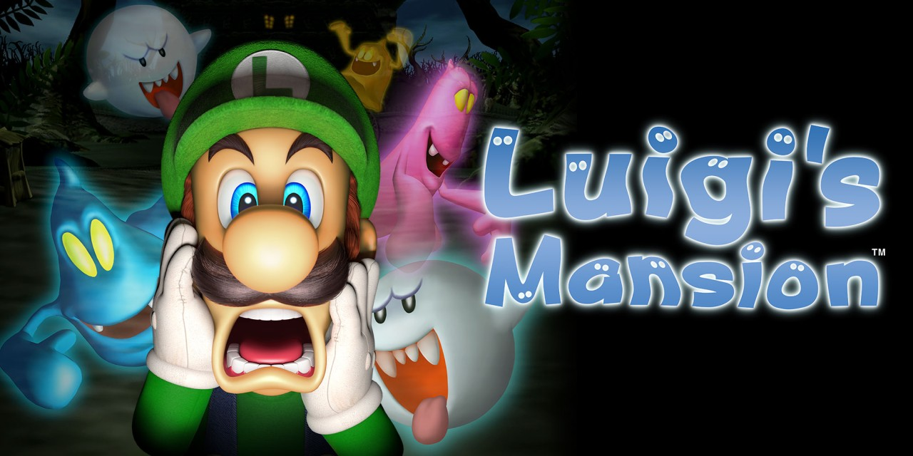

Luigi's Mansion
Luigi's Mansion is a 2001 action-adventure game developed and published by Nintendo. The game was a launch title for the GameCube and was the first game in the Mario franchise to be released for the console; it was released in North America on November 18, 2001. Players control Luigi as he explores a haunted mansion, searches for Mario and deals with ghosts by capturing them through a vacuum cleaner supplied by Professor E. Gadd. Luigi's Mansion received a positive critical reception overall, with reviewers praising the gameplay, setting, and soundtrack, though its short length was criticized. The game has sold over 3.3 million copies, and is the fifth-best-selling GameCube game of all time. It was one of the first games to be re-released as a Player's Choice title on the system, and achieved a cult following. The game was followed by two sequels Luigi's Mansion: Dark Moon, released for the Nintendo 3DS in 2013, and Luigi's Mansion 3, which was released for the Nintendo Switch in 2019.
